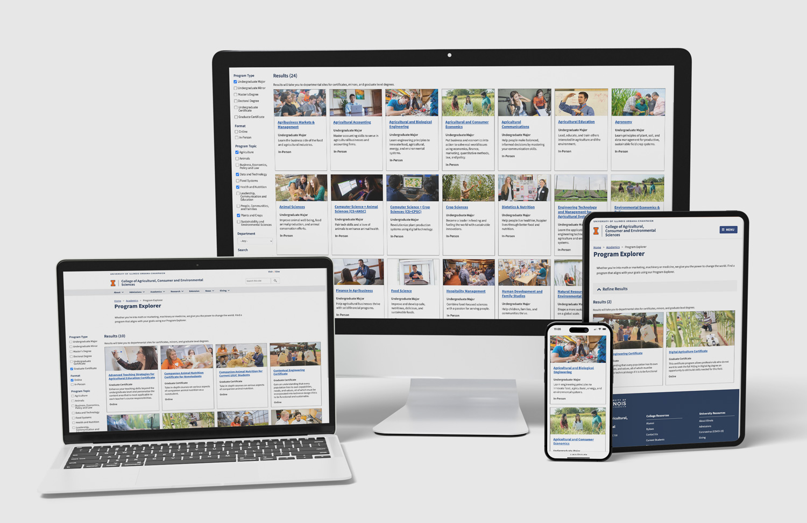
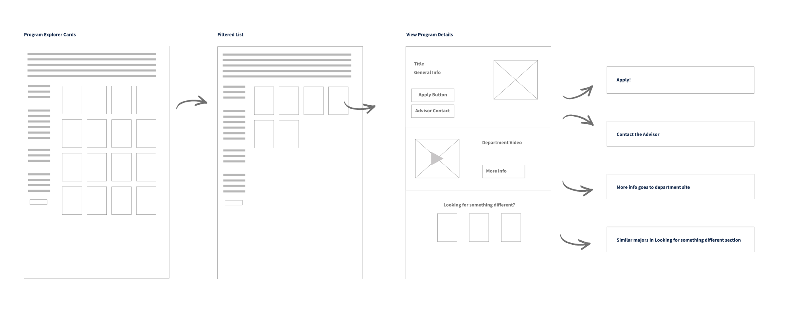
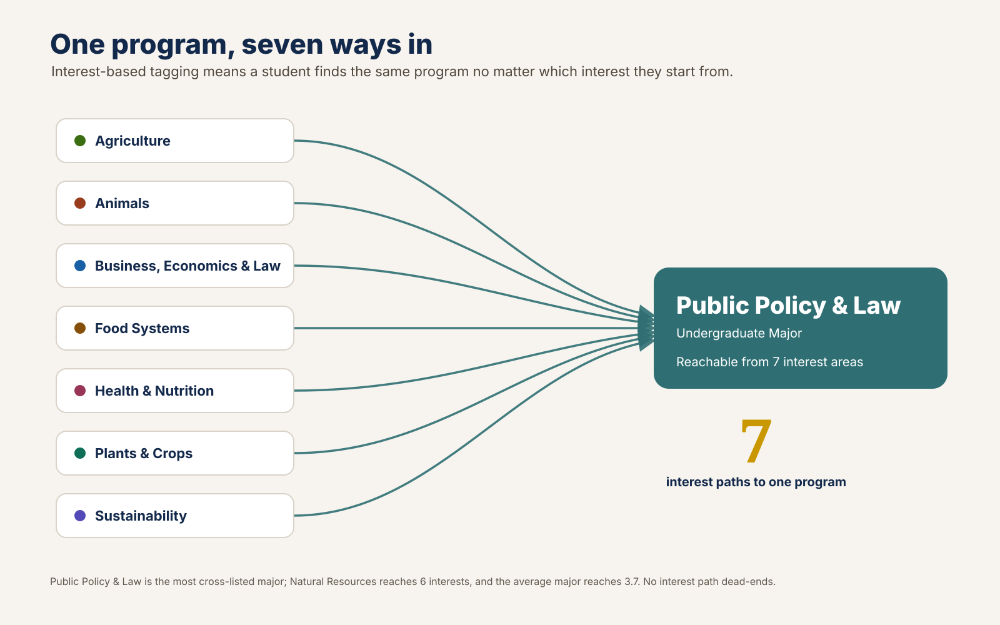
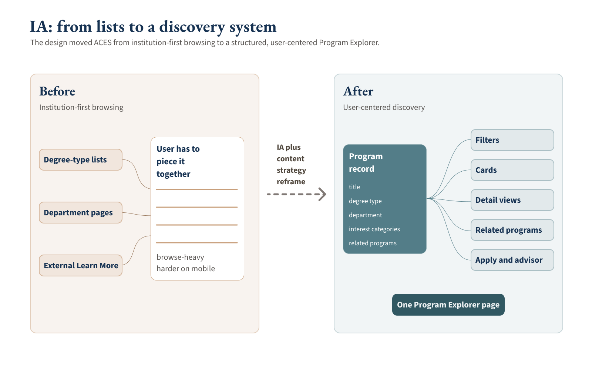
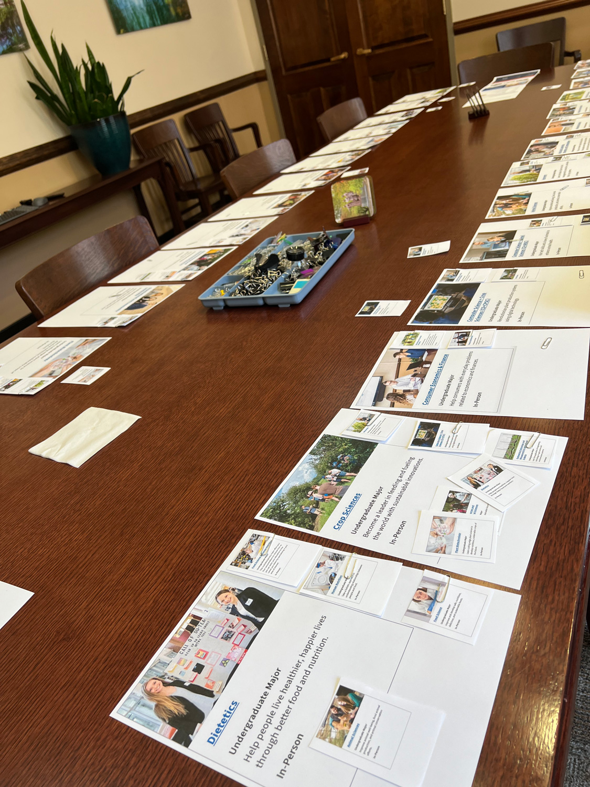
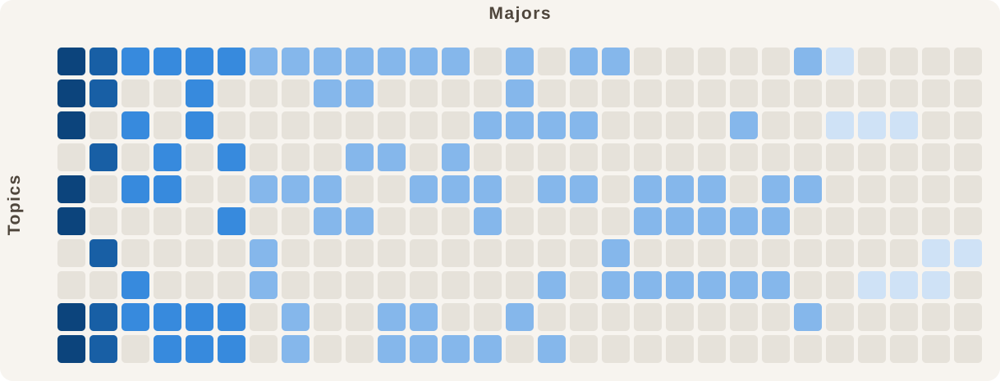

College of Agricultural, Consumer and Environmental Sciences (ACES), University of Illinois · 2022–2023
ACES Program Explorer
I designed and led an interest-based program-discovery system that let prospective students explore ACES by what they cared about, while giving the college one catalog model it could grow and reuse.

At a Glance
- Role: De facto product manager and UX design lead while holding the Director of Web Development role for ACES.
- Ownership: I designed the Program Explorer, including every wireframe, interaction decision, and structured-content requirement.
- Team: Two engineers implemented the build. A content-focused UX designer owned program-page content design, and a graduate student supported research and content assembly.
- Timeline: Roughly 6–8 months, 2022–2023.
- Methods: Card sorting, tree testing, prototype feedback, stakeholder facilitation, and accessibility review.
- Platform: Drupal.
Three Pressures Made a Department-First List Fail
Prospective students were trying to picture a future for themselves. The college was showing them its internal filing system. Department-first navigation made a growing catalog harder to explore, especially on a site that offered little help with filtering, sorting, mobile exploration, or comparison.
The Catalog Was About to Balloon
A 2022 Investment for Growth award of $1.7 million in campus funding stood up the ACES Learning Innovation Lab and new online courses that could stack into certificates and master’s programs. The catalog was set to expand fast.
16 certificates, on its way to 43
Students Searched by Interest, Not Department
Admissions and in-person recruiting kept surfacing the same gap: prospective students talked in interests, including business, animals, sustainability, and food, but the site only let them browse by department.
Department-first navigation
It Had to Double as a Recruiting Tool
Marketing and Prospective Student Days needed a majors-only view to put in front of prospective students, without commissioning a second build.
Reusable for recruitment
I Designed the Discovery Flow and Directed the Build
There was no formal product function for this work, so I set the direction and designed the experience end to end. I defined an interest-based discovery model and the information architecture behind it, then directed two engineers through the Drupal build.
I made the interaction decisions that turned that model into a usable path:
- Each program card acted as one clear control, reducing noise while supporting mouse, keyboard, and screen-reader use.
- Program detail stayed inside the Explorer instead of sending students to a separate department microsite, so they could review an option and return to their results.
- Every detail view offered the next useful step: apply, contact an advisor, visit the department, or continue through related programs.
- Over-filtering led to a recovery state with a way to clear filters or browse everything instead of a dead end.

A Multi-Tag Taxonomy Created Multiple Paths
The interest categories needed evidence, especially because the primary prospective-student audience was largely under 18 and difficult to reach directly. I used card sorting and tree testing, then checked the work through targeted follow-ups with people who worked closest to prospective students. The goal was practical confidence in the model, not a broad claim about every future user.
Some programs fit one category cleanly. Interdisciplinary programs belonged in several places. That led to multi-category tagging and related-program surfacing instead of one rigid taxonomy.
One saved Treejack task for Agricultural and Biological Engineering showed 96% task success, 96% directness, a 9.24-second median completion time, and a 10/10 findability score. Only that task’s full statistics survived in the reviewed files. It is a bounded signal for the interest-based model, not a quantified claim across the whole product.


I Aligned Nine Departments Around Related Programs
Related programs needed department expertise and an experience that reflected how students looked for options.
I led a mapping workshop with department heads and representatives. Each major had a large sheet with basic program information. Participants placed smaller program cards on the sheets to identify relationships grounded in student interest and advising patterns.
The workshop made the tradeoffs visible. Departments had unequal numbers of programs, so equal representation was not a useful rule. I facilitated a model that respected department expertise while keeping the discovery path centered on students. The Dean took part directly, which helped settle disagreement. The result became the related-programs model used in the Explorer, including cross-department paths such as Agricultural Business for business-minded students.
Content accuracy was part of the decision
Testing also surfaced a mismatch between how students searched and how three programs were formally classified. Students, recruiters, and the existing majors pages treated them as majors, while the departments still recorded them as minors within their core majors during a multi-year curriculum-governance process.
I followed the finding into conversations with Admissions and the departments. Once the status was confirmed, the same stakeholder group decided to surface the programs on the majors list so the site matched the way students actually searched while the formal reclassification process continued.

One Content Model Powered Multiple Views
One structured Drupal record could power a card, its filters and sorting, its detail view, related programs, and its apply and advisor calls to action. I defined that content model so the same information did not need to be maintained in separate lists and pages.
That structure let the Explorer grow without a new information architecture. It also let the experience appear outside the primary catalog page. I designed a configuration model that allowed an editor to preset or hide filters for a given context. For a Prospective Student Days campaign, I used it to place a majors-only Explorer on the landing page. Minors, certificates, and graduate programs were hidden so visitors saw exactly what the campaign promoted, with no separate build.

I Rebuilt Filtering for a Continuous, Accessible Flow
I treated each program card as one interactive element. That reduced screen-reader verbosity and made the cards easier to use with a keyboard. The wider requirements covered color contrast, responsive type, visible focus, meaningful image descriptions, and limited reliance on animation.
An accessibility working-group review caught a more consequential problem. Selecting a filter reloaded the page, sending keyboard and screen-reader users back to the top to traverse the page again. I defined the interaction fix, tested it, and directed the engineers who implemented it. Results now update through AJAX, focus stays in place, selections persist through browser back-and-forward navigation, and the interface announces the result count, such as “12 of 17 results.”
Validation came through internal automated checks, team testing, and manual review with accessibility-focused colleagues. It was not a formal third-party audit.
One Build Absorbed Growth and Supported Recruiting
What held: The Explorer stayed useful as the catalog expanded. Certificates grew from 16 to 43, within a catalog that later included 126 program options across nine departments. The interest-based structure absorbed that growth without a redesign, and the same content model supported the majors-only recruiting view. The Explorer is still live three years later.
Directional signals: One saved tree-testing task and a GA4 path report of 11,055 Program Explorer sessions indicate that visitors continued into program areas and individual program pages. The reviewed export does not preserve its date range. Orientation conversations with parents and incoming students, along with Admissions observations, described the experience as easier to navigate and less overwhelming than the old list.
Later influence: The ACES approach later informed a comparable program-and-course repository shared between the College of Education and Gies College of Business. That was a separate build shaped through conversations with its web lead, not an adoption of the ACES Explorer as-is.
What I do not claim: Institutional privacy policy prevented tying Explorer use to applications or enrollment. I do not make conversion, application, enrollment, retention, or quantified decision-paralysis claims.

To examine the program system more closely, including the imbalance in the old list and the relationship between interests, majors, and departments, explore the interactive program-system views.
What I Would Measure Next
The privacy limit on application and enrollment attribution was real. It did not prevent a stronger measurement plan for the experience itself.
If I were setting it up today, I would capture:
- Discovery quality: a baseline on the old list, task success, time to a first relevant program, and mobile completion.
- Behavior: filter and search use, plus related-program clicks.
- Operational value: aggregate questions to Admissions or advising and the effort required to add a program.
That would connect discovery quality to recruiting support and the practical value of avoiding unnecessary redesign work as the catalog grew.
Related Materials
- One-page version: ACES Program Explorer (the 60-second read).
- Figma slide deck: Program Explorer.
- Interaction prototype: Five clickable discovery flows using representative content.
- Figma design file: wireframes and interaction design.
- Major×interest matrix: Explore the matrix.
- Interactive program-system views: Four views of the program system, including the list problem, the interest-to-major relationship map, the department-by-interest structure matrix, and a sortable catalog.